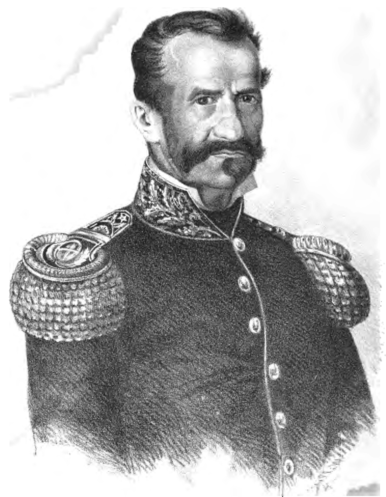
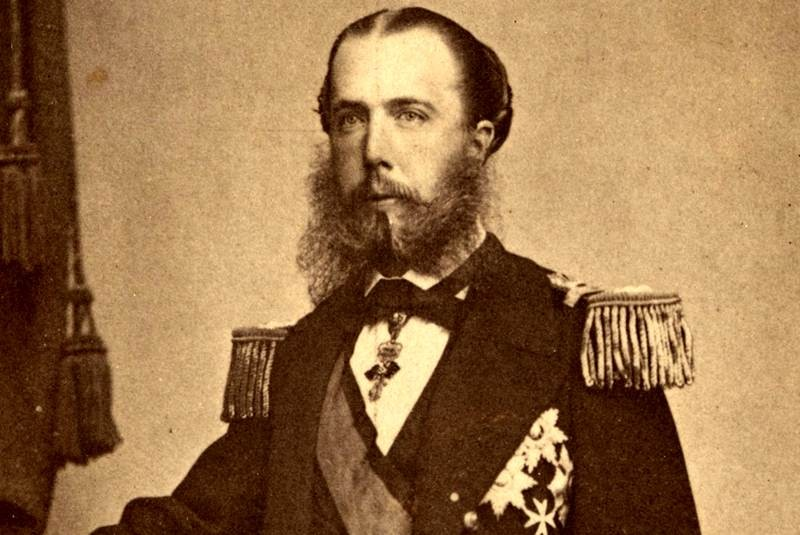

La batalla del cinco de mayo tiene su origen desde la Guerra de Reforma: conflicto armado entre liberales y conservadores en el que Benito Juárez defendía el orden constitucional, mientras que Félix Zuloaga buscaba el cambio de ésta, estableciendo las Cinco Leyes; serían los liberales quienes ganarían la presidencia y Benito Juárez decretaría las Leyes de Reforma, en las que se establecía la separación de la Iglesia y el Estado, la nacionalización de los bienes eclesiásticos y se ordenaría el registro civil, el matrimonio civil y la libertad de cultos.
Tras esta guerra, el gobierno mexicano se encontró sin recursos para cubrir los gastos que se habían originado, por lo que en 1861 el presidente Benito Juárez decidió suspender los pagos a la deuda externa por dos años, para así recuperar la economía del país. Ese mismo año, el 31 de octubre, representantes de España, Francia e Inglaterra se reunieron en Londres para establecer una estrategia y exigir al gobierno mexicano el pago de la deuda que ascendía a 80 millones de dólares, y al no recibir tal, amenazaron con una intervención armada.
Fue a principios de 1862 que las tropas de los tres países desembarcaron en el puerto de Veracruz. Juárez logró un acuerdo con los ingleses y españoles: los Acuerdos de la Soledad, por lo que se retiraron; sin embargo, los franceses llamaron a tropas adicionales integradas por belgas, austriacos y soldados de la legión extranjera, las que llegaron a Veracruz en marzo de 1862.
1.-Ignacio Zaragoza
2.-Charles Ferdinand Latrille, conde de Lorencez
3.-Benito Juarez
5.-Miguel Negrete
6.-Porfirio Dias
7.-Antonio Manchado y Álvarez
8.- Felipe Berriozabal
9.-J. Lamadrid

10.-Maximiliano

La batalla de Puebla fue un combate librado el 5 de mayo de 1862 en las cercanías de la ciudad de Puebla, entre los ejércitos de la República Mexicana, bajo el mando de Ignacio Zaragoza, y del Segundo Imperio Francés, dirigido por Charles Ferdinand Latrille, conde de Lorencez, durante la Segunda Intervención Francesa en México, cuyo resultado fue una victoria importante para los mexicanos ya que con unas fuerzas consideradas como inferiores lograron vencer a uno de los ejércitos más experimentados y respetados de su época. Pese a su éxito, la batalla no impidió la invasión del país, sólo la retrasó, sin embargo, sería la primera batalla de una guerra que finalmente México ganaría.
Los franceses regresarían al siguiente año, con lo que se libró una segunda batalla en Puebla en la que se enfrentaron 35 000 franceses contra 29 000 mexicanos (defensa que duró 62 días), y lograrían avanzar hasta la Ciudad de México, lo que permitió establecer el Segundo Imperio Mexicano.
Finalmente, ante la incapacidad de consolidar un imperio y después de perder 11 000 hombres debido a la actividad guerrillera que nunca dejó de subsistir,1 los franceses se retiraron incondicionalmente del país en el año de1867.
La Batalla de Atlixco tuvo lugar el 4 de mayo de 1862 en las inmediaciones de la Hacienda de las Traperas en Atlixco en el estado de Puebla, México, entre elementos del ejército mexicano de la república, al mando de los generales Antonio Carvajal y Tomás O'Horan contra las tropas al servicio del Segundo Imperio Mexicano comandadas por el general José María Cobos y de Leonardo Márquez, compuesta de soldados conservadores mexicanos en apoyo de envío de refuerzos para llevar a cabo la Batalla de Puebla, durante la Segunda Intervención Francesa en México.
Esta batalla culminó con una victoria republicana y debido a esto el grupo conservador de Márquez no pudo lograr su objetivo de auxiliar a las tropas francesas del Conde de Lorencez en la batalla de Puebla.
El Cinco de Mayo,1 fecha de la conmemoración de la Batalla de Puebla, marca la primera vez que el ejército mexicano pudo derrotar a una potencia extranjera mejor preparada, en este caso los franceses. La batalla tuvo lugar en la actual ciudad de Puebla de Zaragoza el 5 de mayo de 1862, entre los ejércitos de México y Francia.
Los franceses regresarían al siguiente año, con lo que se libró una segunda batalla en Puebla en la que se enfrentaron 35 000 franceses contra 29 000 mexicanos (defensa que duró 62 días), y lograrían avanzar hasta la Ciudad de México, lo que permitió establecer el Segundo Imperio Mexicano.
Estados Unidos al término de su guerra civil, presionó a Francia para que se retiraran. El retiro de las fuerzas francesas en 1867 fue obligado. Maximiliano, indefenso, tuvo que recurrir a sus antiguos aliados conservadores, los generales Miramón y Mejía, pero ya era demasiado tarde.
Casi un mes después, el 15 de julio, el presidente Benito Juárez regresó a la capital, y los mexicanos finalmente tomaron su país de nuevo. Como el historiador mexicano famoso y filósofo, Justo Sierra, dijo que desde un punto de vista puramente militar, la batalla no es gran cosa. Sin embargo, escribió Sierra, “sus resultados morales y políticos eran inconmensurables. La nación entera estaba encantado con entusiasmo. Sin duda, ningún mexicano, cualquiera que sea su partido, fue abatido por la victoria.”
Los fuertes de Loreto y Guadalupe son unas antiguas edificaciones militares que se encuentran en la ciudad de Puebla. Originalmente se trataba de capillas construidas en lo alto de un cerro Acueyametepec, que fueron reconstituidas a principios del siglo XIX como fortificaciones con finalidades militares. Sirvieron como escenario principal tanto en la batalla como en el sitio de Puebla, durante la Segunda Intervención Francesa en México. Declarados como patrimonio histórico de México, actualmente albergan museos de sitio.
En 1930 los fuertes y la zona aledaña al cerro fueron declarados propiedad de la nación al servicio al pueblo, y en Loreto se construyó un Museo de Guerra. En 1962, con motivo del centenario de la batalla, el museo se amplió y se dotó de servicios al área del parque. Actualmente, en la Zona Histórica de los Fuertes se ubican también un Museo Regional del Instituto Nacional de Antropología e Historia, el Auditorio de la Reforma y la Casa Puebla. Además, a un costado se ubica el Centro de Exposiciones de Puebla y un monumento donde reposan los restos de Ignacio Zaragoza y su esposa Rafaela Padilla.